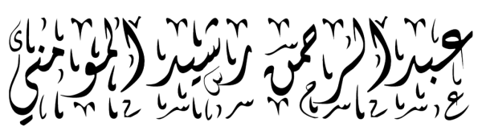

Causal Inference · Explainable AI · Complex Networks · Global Optimization
Assistant Professor and Program Coordinator of Data Science, Embry-Riddle Aeronautical University
I build mathematically grounded models that explain why complex systems behave the way they do, using information theory, causality, and optimization to deliver interpretable, robust solutions for real-world and industrial problems. My work bridges federally funded research and hands-on industry engineering.
I solve complex-systems problems with the mathematics that makes models trustworthy. My work draws on information theory, entropy, and causality to build models that are interpretable, identifiable, and robust, even when the data is noisy, sparse, limited, or has missing features.
Two threads run through my work. The first is information-theoretic: geometric and entropy-based frameworks that separate informative signal from noise, uncover causal structure, and recover the governing relationships behind data. The second is optimization: I design global, derivative-free methods (genetic algorithms, particle-swarm optimization, and related metaheuristics) to solve hard industrial decision problems such as production scheduling, resource and power allocation, and system design.
I work on both sides of the research-to-practice divide: federally funded and academic research (AFRL, NSF, ONR, ARO) on one hand, and deployed industry engineering on the other, where much of my optimization and systems work shipped as working solutions rather than publications.
Electrical & Computer Engineering, 2017–2019
Research supported by ARO
Prediction Analysis and System Identification of Complex Systems
Applied Mathematics, 2015–2017
Research supported by ONR
Coherence from Video Data without Trajectories
Mechatronics Engineering, 2006–2010